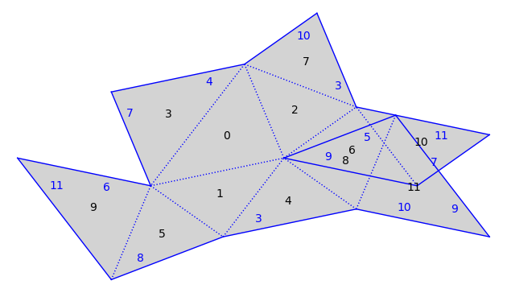
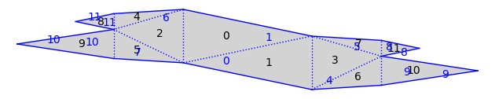

Relative Period Deformations¶
Initial version by Pat Hooper whooper@ccny.cuny.edu, Dec. 16, 2017.
from flatsurf import *
The Arnoux-Yoccoz surface¶
s = translation_surfaces.arnoux_yoccoz(3).canonicalize()
s.plot()

field=s.base_ring()
field
Number Field in alpha with defining polynomial x^3 + x^2 + x - 1 with alpha = 0.5436890126920763?
alpha = field.gen()
AA(alpha)
0.5436890126920763?
m=matrix(field,[[alpha,0],[0,1/alpha]])
show(m)
\(\displaystyle \left(\begin{array}{rr}
\alpha & 0 \\
0 & \alpha^{2} + \alpha + 1
\end{array}\right)\)
Check that $m$ is the derivative of a pseudo-Anosov of $s$.
(m*s).canonicalize()==s
True
Rel deformation¶
A singularity of the surface is an equivalence class of vertices of the polygons making up the surface.
s.singularity(0,0)
singularity with vertex equivalence class frozenset({(1, 2), (2, 1), (3, 1), (6, 1), (7, 0), (8, 0), (0, 2), (10, 0), (11, 2), (2, 2), (4, 1), (5, 2), (0, 0), (3, 0), (7, 2), (6, 0), (9, 1), (10, 2)})
We’ll move this singularity to the right by two different amounts:
s1=s.rel_deformation({s.singularity(0,0):vector(field,(alpha/(1-alpha),0))}).canonicalize()
s2=s.rel_deformation({s.singularity(0,0):vector(field,(1/(1-alpha),0))}).canonicalize()
# Note that by the action of the derivative of the pseudo-Anosov we have:
s1==m*s2
True
By a Theorem of Barak Weiss and the author of this notebook, these surfaces are all periodic in the vertical direction. You can see the vertical cylinders:
s1.plot()
